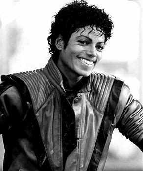
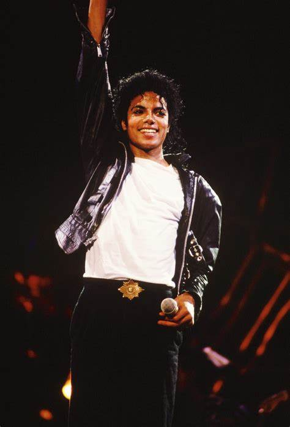
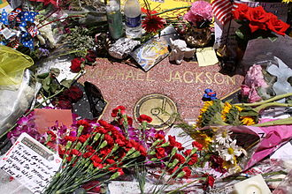

Michael Joseph Jackson (August 29, 1958 – June 25, 2009) was an American singer, songwriter, dancer, and philanthropist.
Known as the "King of Pop", he is regarded as one of the most significant cultural figures of the
20th century. During his four-decade career, his contributions to music, dance, and fashion,
along with his publicized personal life, made him a global figure in popular culture.
Jackson influenced artists across many music genres. Through stage and video performances,
he popularized complicated street dance moves such as the moonwalk, which he named, as well as
the robot.
He was the eighth child of the Jackson family, and made his public debut in 1964 with
his older brothers Jackie, Tito, Jermaine, and Marlon as a member of the Jackson 5 (later known as
the Jacksons). The Jackson 5 signed with Motown in 1968 and achieved worldwide success with Michael
as lead singer. Jackson began his solo career in 1971 while at Motown and recorded multiple successful
singles outside of Jackson 5. He became a global solo star with his 1979 album Off the Wall. His music
videos, including those for "Beat It", "Billie Jean", and "Thriller" from his 1982 album Thriller, are
credited with breaking racial barriers and transforming the medium into an art form and promotional
tool. He helped propel the success of MTV and continued to innovate with the videos for his subsequent
albums: Bad (1987), Dangerous (1991), HIStory: Past, Present and Future, Book I (1995), and Invincible
(2001). Thriller became the best-selling album of all time, while Bad was the first album to produce
five US Billboard Hot 100 number-one singles.
From the late 1980s, Jackson became a figure of controversy and speculation due to his changing
appearance, relationships, behavior, and lifestyle. In 1993, he was accused of sexually abusing
the child of a family friend. The lawsuit was settled out of civil court; Jackson was not
indicted due to lack of evidence. In 2005, he was tried and acquitted of further child sexual
abuse allegations and several other charges. The FBI found no evidence of criminal conduct by
Jackson in either case. In 2009, while he was preparing for a series of comeback concerts,
This Is It, Jackson died from an overdose of propofol administered by his personal physician,
Conrad Murray, who was convicted in 2011 of involuntary manslaughter for his involvement in
Jackson's death. His death triggered reactions around the world, creating unprecedented
surges of internet traffic and a spike in sales of his music. Jackson's televised memorial
service, held at the Staples Center in Los Angeles, was estimated to have been viewed by
more than 2.5 billion people.
Jackson is one of the best-selling music artists of
all time, with sales estimated around 500 million records worldwide.He had 13 Billboard
Hot 100 number-one singles (fourth highest of any artist in the Hot 100 era) and was the first
artist to have a top-ten single on the Billboard Hot 100 in five different decades. His honors
include 15 Grammy Awards, six Brit Awards, a Golden Globe Award, and 39 Guinness World Records,
including the "Most Successful Entertainer of All Time". Jackson's inductions include the Rock
and Roll Hall of Fame (twice), the Vocal Group Hall of Fame, the Songwriters Hall of Fame, the
Dance Hall of Fame (making him the only recording artist to be inducted) and the National Rhythm
& Blues Hall of Fame.

Jackson has been referred to as the "King of Pop" for having transformed
the art of music videos and paving the way for modern pop music. For much of Jackson's
career, he had an unparalleled worldwide influence over the younger generation.
His influence extended beyond the music industry; he impacted dance, led fashion trends,
and raised awareness for global affairs.
Jackson's music and videos fostered racial diversity in MTV's roster and steered its
focus from rock to pop music and R&B, shaping the channel into a form that proved enduring.
In songs such as "Man in the Mirror", "Black or White", "Heal the World", "Earth Song" and
"They Don't Care About Us", Jackson's music emphasized racial integration and
environmentalism and protested injustice.
He is recognized as the Most Successful Entertainer of All Time by Guinness World Records.
Jackson has also appeared on Rolling Stone's lists of the Greatest Singers of All Time.
He is considered one of the most significant cultural icons of the 20th century,
and his contributions to music, dance, and fashion, along with his publicized personal life,
made him a global figure in popular culture for over four decades.
Danyel Smith, chief content officer of Vibe Media Group and the editor-in-chief of Vibe,
described Jackson as "the greatest star".
Steve Huey of AllMusic called him "an unstoppable juggernaut, possessed of all the skills
to dominate the charts seemingly at will: an instantly identifiable voice, eye-popping dance moves,
stunning musical versatility and loads of sheer star power".
BET said Jackson was "quite simply the greatest entertainer of all time" whose
"sound, style, movement and legacy continues to inspire artists of all genres".
In 1984, Time pop critic Jay Cocks wrote that "Jackson is the biggest thing since the Beatles.
He is the hottest single phenomenon since Elvis Presley. He just may be the most popular black
singer ever." He described Jackson as a "star of records, radio, rock video. A one-man rescue
team for the music business. A songwriter who sets the beat for a decade.
A dancer with the fanciest feet on the street. A singer who cuts across all
boundaries of taste and style, and color too."
In 2003, The Daily Telegraph writer Tom Utley described Jackson as "extremely important" and a
"genius".At Jackson's memorial service on July 7, 2009, Motown founder Berry Gordy called Jackson
"the greatest entertainer that ever lived".In a June 28, 2009 Baltimore Sun article, Jill Rosen
wrote that Jackson's legacy influenced fields including sound, dance, fashion, music videos and
celebrity.Pop critic Robert Christgau wrote that Jackson's work from the 1970s to the early 1990s
showed "immense originality, adaptability, and ambition" with "genius beats, hooks, arrangements,
and vocals (though not lyrics)", music that "will stand forever as a reproach to the puritanical
notion that pop music is slick or shallow and that's the end of it". During the 1990s, as Jackson
lost control of his "troubling life", his music suffered and began to shape "an arc not merely of
promise fulfilled and outlived, but of something approaching tragedy: a phenomenally ebullient child
star tops himself like none before, only to transmute audibly into a lost weirdo".[436] In the 2000s,
Christgau wrote: "Jackson's obsession with fame, his grotesque life magnified by his grotesque
wealth, are such an offense to rock aesthetes that the fact that he's a great musician is now
often forgotten".

On June 25, 2009, less than three weeks before his concert residency was due to begin in London,
with all concerts sold out, Jackson died from cardiac arrest, caused by a propofol and
benzodiazepine overdose.Conrad Murray, his personal physician, had given Jackson various
medications to help him sleep at his rented mansion in Holmby Hills, Los Angeles.
Paramedics received a 911 call at 12:22 pm Pacific time (19:22 UTC) and arrived three
minutes later.Jackson was not breathing and CPR was performed.Resuscitation
efforts continued en route to Ronald Reagan UCLA Medical Center, and for more than an hour
after Jackson's arrival there, but were unsuccessful,and Jackson was pronounced dead at
2:26 pm Pacific time (21:26 UTC).
Murray had administered propofol, lorazepam, and midazolam;his death was caused by a
propofol overdose.[306][311] News of his death spread quickly online, causing websites
to slow down and crash from user overload,and it put unprecedented strain
on many services and websites including Google,AOL Instant Messenger,Twitter and Wikipedia.
Overall, web traffic rose by between 11% and 20%.MTV and BET aired marathons of
Jackson's music videos,and Jackson specials aired on television stations around the world.
MTV briefly returned to its original music video format,and they aired hours of
Jackson's music videos, with live news specials featuring reactions from MTV
personalities and other celebrities.
Jackson's memorial was held on July 7, 2009, at the Staples Center in Los Angeles, preceded by a
private family service at Forest Lawn Memorial Park's Hall of Liberty. Over 1.6 million fans applied
for tickets to the memorial; the 8,750 recipients were drawn at random, and each received two
tickets. The memorial service was one of the most watched events in streaming history,
with an estimated US audience of 31.1 million and a worldwide audience of an estimated 2.5
to 3 billion. Mariah Carey, Stevie Wonder, Lionel Richie, Jennifer Hudson, and
Shaheen Jafargholi performed at the memorial, and Smokey Robinson and Queen
Latifah gave eulogies.Al Sharpton received a standing ovation with cheers when he
told Jackson's children: "Wasn't nothing strange about your daddy. It was strange
what your daddy had to deal with. But he dealt with it anyway."
Jackson's 11-year-old daughter Paris Katherine, speaking publicly for the
first time, wept as she addressed the crowd.Lucious Smith provided a
closing prayer. On September 3, 2009, the body of Jackson was entombed at
Forest Lawn Memorial Park in Glendale, California.